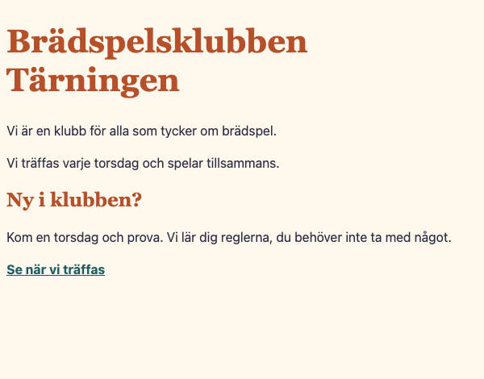
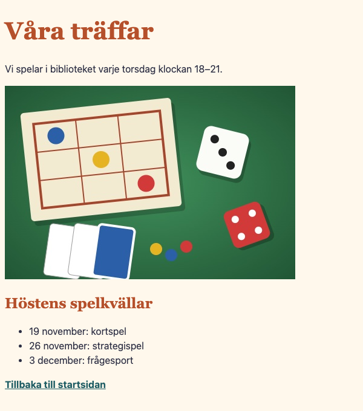

Övning T4 · Färg och typsnitt
Läs så här: Välj en nivå per etapp: 🟢 Grön ger dig varje steg, 🔵 Blå säger vad som behövs men inte koden, 🔴 Röd ger bara kravet. Etapperna är desamma på alla nivåer, så du kan byta nivå mellan etapperna (och mitt i om du fastnar). Varje etapp slutar med Så vet du att etappen är klar: kontrollera den innan du går vidare. Längst ner finns Vanliga fel och, om du vill ha mer, ⚫ Svart.
Du bygger: Brädspelsklubben Tärningen från förra veckan får färger och typsnitt. HTML-koden är redan klar i en startmapp, så du skriver bara CSS: språket som bestämmer hur sidan ser ut. Du lägger CSS:en i en egen fil som båda sidorna använder, så att startsidan och sidan Träffar ser ut som en och samma webbplats.


Du behöver: mappen ovningar, öppen i VS Code, och Live Server. Mappen t4-start, som ligger som zip-fil bredvid den här övningen i Learnpoint. Klipp 5 och 6 sedda.
Paletten: klubbens färger. En hex-kod är en färg skriven som # och sex tecken: två för rött, två för grönt och två för blått, från 00 (inget) till ff (fullt).
| Färg | Hex-kod | Används till |
|---|---|---|
| mörk blåsvart | #2b2d42 | brödtext |
| krämvit | #fff8ec | bakgrund |
| tegelröd | #b5502b | rubriker, länk under muspekaren |
| mörk petrol | #1d5c63 | länkar |
Etapp 1 · Startmappen och stilmallen
Varför: CSS står i en egen fil, en stilmall, och varje sida behöver en länk till den för att använda den.
🟢 Grön · Steg för steg
- Hämta
t4-start.zipfrån Learnpoint och packa upp den. På Mac dubbelklickar du på zip-filen. På Windows högerklickar du på den och väljer Extrahera alla (Extract All). Nu har du en vanlig mapp som hetert4-start. - Dra mappen
t4-startfrån Finder (Mac) eller Utforskaren (Windows) och släpp den på OVNINGAR i filpanelen i VS Code (listan över filerna, till vänster). - Klicka på pilen framför
t4-start. Där liggerindex.html,meetups.htmloch mappenimages. Högerklicka påindex.htmloch välj Open with Live Server. Sidan öppnas i Chrome: svart text på vit botten, som förra veckan. - Högerklicka på mappen
t4-starti filpanelen och välj New File…. Skrivstyle.cssoch tryck Enter. Filen ska ligga it4-start, bredvidindex.html. - Skriv av koden i
style.css:
/* Brädspelsklubben Tärningen: färger och typsnitt */
* {
box-sizing: border-box;
}
body {
background-color: #fff8ec;
}- Spara (Cmd+S / Ctrl+S). Titta i Chrome: ingenting har hänt. Sidan vet ännu inte att stilmallen finns.
- Öppna
index.html. Ställ markören i slutet av raden med<title>, tryck Enter och skriv länken till stilmallen. Så här ser<head>ut efteråt:
<head>
<meta charset="utf-8" />
<title>Brädspelsklubben Tärningen</title>
<link rel="stylesheet" href="style.css" />
</head>- Spara och titta i Chrome. Bakgrunden är krämvit.
- Öppna
meetups.htmloch skriv samma<link>-rad efter<title>-raden där. Spara. Klicka på länken Se när vi träffas i Chrome: sidan Träffar har också krämvit bakgrund.
Det här betyder koden:
/* … */är en kommentar: en anteckning till den som läser koden. Webbläsaren hoppar över den.- En regel består av en selektor, som väljer vilka element som ska få utseendet (här
body, hela den synliga sidan), och ett deklarationsblock inom{och}. - Inne i blocket står deklarationer: en egenskap, kolon, ett värde och semikolon.
background-color: #fff8ec;betyder "bakgrundsfärgen ska vara krämvit". * { box-sizing: border-box; }är raden vi alltid börjar med, så att bredden du anger är bredden du får. Den märks först när du ger saker bredd, i övning T5.<link>kopplar sidan till stilmallen.rel="stylesheet"säger att filen är en stilmall, ochhrefär sökvägen dit. Filen ligger i samma mapp som sidan, så filnamnet räcker.
🔵 Blå · Med ledtrådar
- Packa upp
t4-start.zipfrån Learnpoint, lägg mappent4-startiovningaroch öppnat4-start/index.htmlmed Live Server. - Skapa
style.cssit4-start, bredvid html-filerna. Börja med en kommentar (/* */) om vad filen är, och sedan raden som alltid står först:box-sizing: border-boxpå selektorn*. - Ge
bodybakgrundsfärgen krämvit ur paletten. Egenskapen heterbackground-color. - Länka stilmallen i
<head>på båda sidorna med ettlink-element. Det behöver två attribut:relmed värdetstylesheetochhrefmed sökvägen till filen.
🔴 Röd · Bara kravet
En stilmall style.css i t4-start som börjar med en kommentar och box-sizing-raden, är länkad från båda sidorna och ger dem krämvit bakgrund.
style.css i t4-start, på samma nivå som index.html.Etapp 2 · Text och bakgrund på hela sidan
Varför: det du ger body ärver allt innehåll på sidan, så typsnitt och textfärg behöver bara skrivas en gång.
🟢 Grön · Steg för steg
- I
style.css: lägg till tre rader ibody-regeln, förebackground-color, så att regeln blir:
body {
font-family: system-ui, Helvetica, Arial, sans-serif;
line-height: 1.5;
color: #2b2d42;
background-color: #fff8ec;
}- Spara och titta på båda sidorna i Chrome.
font-familyär typsnittet. Du skriver en lista med reservtypsnitt: webbläsaren tar det första som finns på datorn.system-uiär datorns eget typsnitt, ochsans-serifsist betyder "vilket typsnitt utan klackar som helst", om inget av de andra finns.line-heightär radavståndet.1.5utan enhet betyder en och en halv gång textens storlek.colorär textfärgen. Element inutibodyärver den, alltså får den utan att du skriver den på varje element.
🔵 Blå · Med ledtrådar
Ge body tre egenskaper till:
font-familymed listansystem-ui, Helvetica, Arial, sans-serif(reservtypsnitt, webbläsaren tar det första som finns)line-heightpå1.5, utan enhetcolormed brödtextens färg ur paletten
🔴 Röd · Bara kravet
All text på båda sidorna är i datorns eget typsnitt utan klackar (med reservtypsnitt), med radavståndet 1,5 och brödtextfärgen ur paletten.
Etapp 3 · Rubrikerna
Varför: rubrikerna ska skilja sig från brödtexten, och samma utseende på två rubriknivåer skriver du i en enda regel.
🟢 Grön · Steg för steg
- Ställ markören efter
body-regelns}, tryck Enter två gånger och skriv:
h1,
h2 {
font-family: Georgia, serif;
line-height: 1.2;
color: #b5502b;
}
h1 {
font-size: 2.5rem;
}
h2 {
font-size: 1.5rem;
}- Spara och titta på båda sidorna.
h1, h2är en gruppering: kommatecknet betyder "bådeh1ochh2". Du kan skrivah1, h2 {på en rad; Prettier, tillägget som ordnar koden när du sparar, ställer varje selektor på en egen rad.Georgia, serifär typsnittet Georgia, med vilket typsnitt med klackar som helst som reserv.font-sizeär textstorleken.remär en enhet där1remär webbläsarens vanliga textstorlek, 16 pixlar.2.5remär alltså två och en halv gång så stor text, 40 pixlar.h1ochh2får sina storlekar i var sin regel efter grupperingen, eftersom storlekarna är olika.
🔵 Blå · Med ledtrådar
- En regel för både
h1ochh2(gruppera selektorerna med kommatecken): typsnittetGeorgia, serif, radavståndet1.2och rubrikfärgen ur paletten. - En regel för
h1medfont-size2.5rem, och en förh2med1.5rem. Enhetenremutgår från den vanliga textstorleken, 16 pixlar.
🔴 Röd · Bara kravet
Alla h1 och h2 har typsnittet Georgia (med reservtypsnitt) och rubrikfärgen, skrivet i en enda regel. h1 är 2,5 gånger och h2 1,5 gånger den vanliga textstorleken, i enheten rem.
style.css står h1 och h2 tillsammans i en regel.Etapp 4 · Länkarna
Varför: en länk ska synas som en länk, och den ska svara när muspekaren kommer.
🟢 Grön · Steg för steg
- Sist i
style.css, efter en tom rad, skriv:
a {
font-weight: bold;
color: #1d5c63;
}
a:hover {
color: #b5502b;
text-decoration: none;
}- Spara. Håll muspekaren över länken Se när vi träffas, och flytta den sedan bort.
font-weight: boldgör texten fet.a:hoverväljer en länk bara medan muspekaren är över den. När pekaren flyttas bort gäller den vanligaa-regeln igen.text-decorationär linjen under texten. Länkar är understrukna från början;nonetar bort linjen.
Hela style.css ser nu ut så här:
/* Brädspelsklubben Tärningen: färger och typsnitt */
* {
box-sizing: border-box;
}
body {
font-family: system-ui, Helvetica, Arial, sans-serif;
line-height: 1.5;
color: #2b2d42;
background-color: #fff8ec;
}
h1,
h2 {
font-family: Georgia, serif;
line-height: 1.2;
color: #b5502b;
}
h1 {
font-size: 2.5rem;
}
h2 {
font-size: 1.5rem;
}
a {
font-weight: bold;
color: #1d5c63;
}
a:hover {
color: #b5502b;
text-decoration: none;
}🔵 Blå · Med ledtrådar
- Alla länkar (
a): fet text (font-weight) och länkfärgen ur paletten. - En regel som bara gäller medan muspekaren är över en länk: selektorn
a:hover. Där byter länken till rubrikfärgen och tappar understrykningen (text-decorationmed värdetnone).
🔴 Röd · Bara kravet
Länkarna är feta och mörkt petrolfärgade. När muspekaren är över en länk blir den tegelröd och inte understruken.
Etapp 5 · Titta och prova i DevTools
Varför: DevTools visar vilka regler som gäller för ett element, och där kan du prova ett värde innan du skriver det i filen.
🟢 Grön · Steg för steg
- På startsidan i Chrome: högerklicka på rubriken och välj Inspektera (Inspect). DevTools öppnas med fliken Elements, och
<h1>är markerat. - Bredvid eller under koden finns fliken Styles. Där står reglerna som gäller för
h1: översth1 { font-size: 2.5rem; }, under denh1, h2 { … }, och längre nerbody { … }. Till höger om varje regel stårstyle.cssoch radnumret där regeln börjar. - Håll pekaren över deklarationen
color: #b5502b;i regelnh1, h2. En kryssruta visas framför den. Klicka bort krysset: rubriken blir blåsvart, för då ärver dencolorfrånbody. Klicka i krysset igen. - Klicka på den lilla färgrutan framför
#b5502b. En färgväljare öppnas. Under Contrast ratio står kontrasten mellan rubrikfärgen och bakgrunden, ungefär4.8, med en bock. Kontrast är skillnaden i ljushet mellan text och bakgrund. WCAG, som du känner från Interaktionsdesign, kräver minst 4.5 för vanlig text. Stäng färgväljaren med Esc. - Klicka på värdet
2.5remi regelnh1, skriv4remoch tryck Enter. Rubriken blir större. - Ladda om sidan (Cmd+R / Ctrl+R). Rubriken är tillbaka på
2.5rem. Det du ändrar i DevTools är bara ett test i webbläsaren; filen i VS Code är den riktiga stilmallen.
🔵 Blå · Med ledtrådar
Inspektera rubriken på startsidan (högerklick → Inspektera) och titta i fliken Styles. Hitta de tre reglerna som påverkar h1 och vilken rad i style.css de står på. Bocka av color i grupperingen och se vilken färg rubriken får i stället. Öppna färgväljaren (färgrutan framför värdet) och läs av kontrasten under Contrast ratio. Ändra textstorleken direkt i Styles och ladda sedan om: vad hände med ändringen?
🔴 Röd · Bara kravet
Ta reda på i DevTools vilka regler som ger rubriken dess utseende, vilken kontrast rubrikfärgen har mot bakgrunden, och vad som händer med en ändring i Styles när du laddar om.
style.css som ger rubriken dess färg. Du har läst av kontrasten (ungefär 4.8, minst 4.5 krävs). Du kan säga varför ändringen i DevTools försvann.⚫ Svart · Utöka (frivilligt, utan facit)
Gör en egen palett för klubben: fyra färger, en mörk till text, en ljus till bakgrund och två att välja bland för rubriker och länkar. Byt hex-koderna i style.css. Kontrollera sedan kontrasten för brödtexten, rubrikerna, länkarna och länkarna under muspekaren i färgväljaren i DevTools: alla ska vara minst 4.5. För att se kontrasten för länken under muspekaren: markera länken i Elements och klicka på :hov i Styles, bocka i :hover. Hitta en kombination som ser bra ut men inte klarar 4.5, och skriv en mening om vad du ändrade för att den skulle klara det.
Vanliga fel
- Inget händer i Chrome trots att du har sparat stilmallen: sidan hittar inte stilmallen. Kontrollera tre saker: att
<link>-raden finns på sidan du tittar på, atthrefär exaktstyle.css(intestyles.cssellerStyle.css), och attstyle.cssligger it4-startoch inte iovningar. I DevTools finns fliken Console, där Chrome skriver ut fel: hittas inte filen står där ett rött meddelande med404, som betyder att filen inte finns. - En del av regeln fungerar men inte resten, eller ingenting efter en viss rad: ett tecken saknas. Varje deklaration slutar med semikolon, och varje
{behöver en}. Får du inget indrag när du sparar, så har Prettier hittat ett sådant fel. I DevTools Styles är en ogiltig deklaration överstruken och har en gul varningstriangel. - Färgen blir inte alls som i paletten:
#saknas framför hex-koden (color: b5502b;), eller koden har fem eller sju tecken. Utan#förstår webbläsaren inte värdet och hoppar över hela deklarationen. Kopiera hex-koderna från paletten.